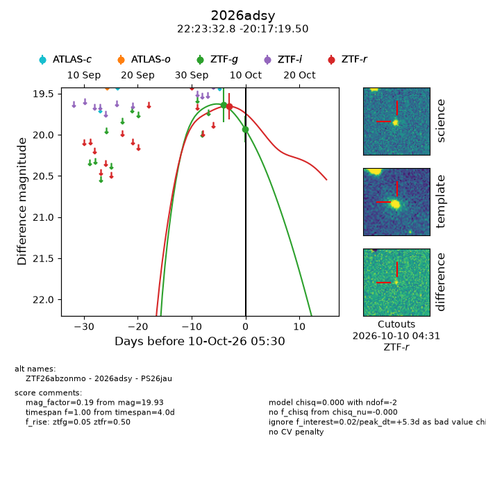
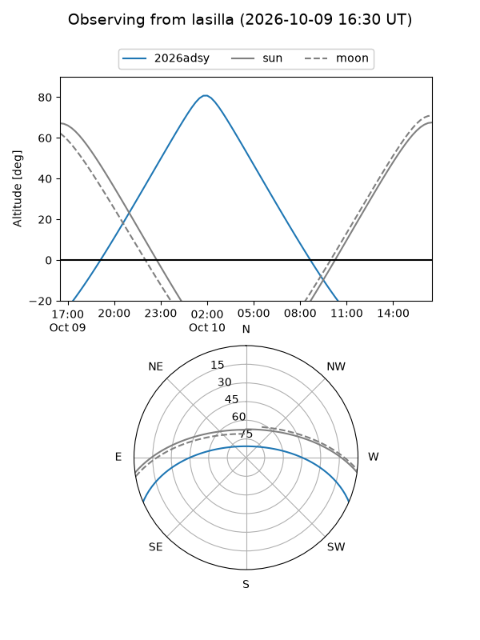
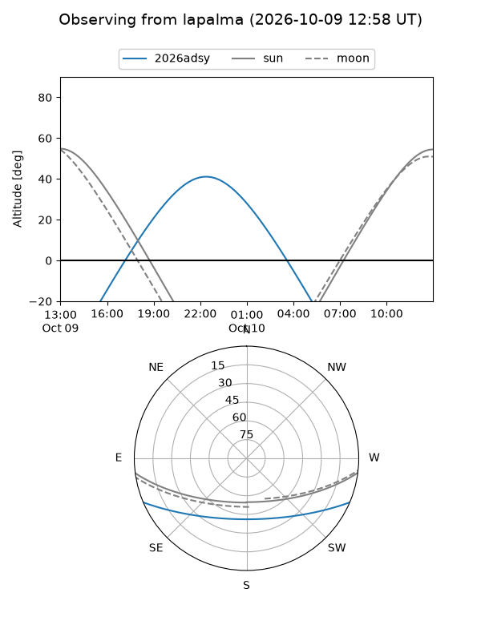
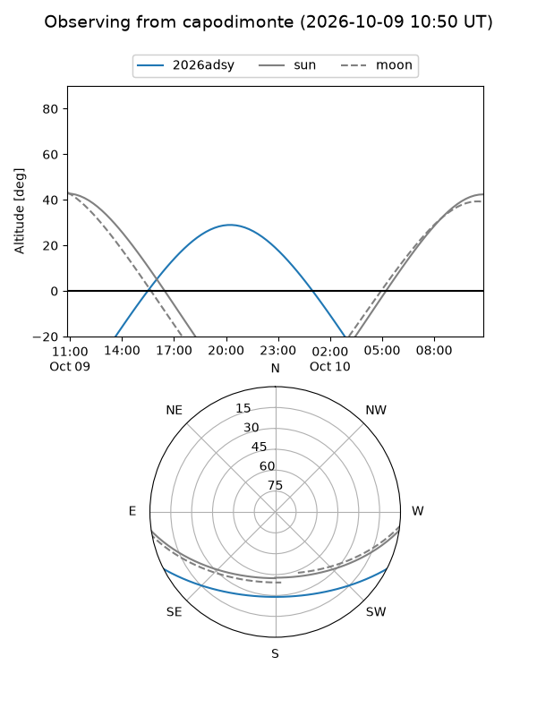
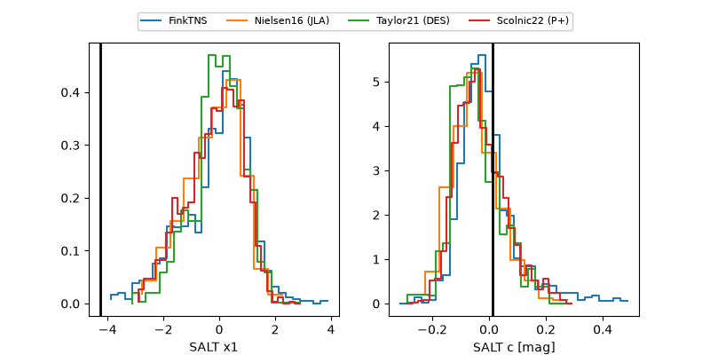

2026adsy
Target 2026adsy at 2026-10-10 05:31
Aliases and brokers:
FINK-ZTF: ztf.fink-portal.org/ZTF26abzonmo
Lasair-ZTF: lasair-ztf.lsst.ac.uk/objects/ZTF26abzonmo
ALeRCE-ZTF: alerce.online/object/ZTF26abzonmo
YSE-PZ: ziggy.ucolick.org/yse/transient_detail/2026adsy
TNS name: wis-tns.org/object/2026adsy
Direct TNS query: direct search
alt names
ZTF26abzonmo (ztf,fink_ztf)
2026adsy (tns,yse)
PS26jau (panstarrs)
Coordinates:
equatorial (ra, dec) = 335.8867,-20.28875
equatorial (HMS+DMS) = 22:23:32.81,-20:17:19.50
galactic (l, b) = (36.2888,-55.59145)
Flags:
peak dt: +5.3
Photometry:
last ztfg=19.93, ztfr=19.65
2 ztfg, 1 ztfr detections
Lightcurve

Visibility



Additional plots
